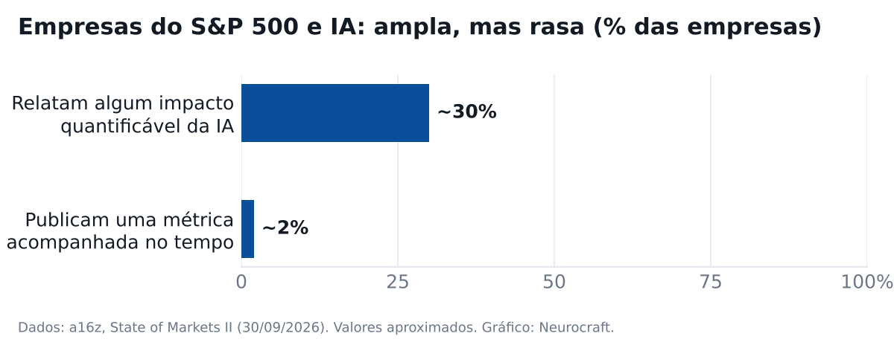

|
Neurocraft
Industrial & Agentic AI · edição de outubro de 2026
|
Sua próxima PoC de IA pode sair por conta da Microsoft
|
|
| |
Uma pergunta direta: quanto do seu orçamento de 2027 vai para um piloto de IA que a Microsoft poderia pagar? |
Essa verba não aparece em proposta comercial, porque quem decide é o time da Microsoft, não o fornecedor. Abaixo explico como ela funciona e como levamos o seu caso até lá. No fim, um dado do a16z e outro da McKinsey mostram por que vale testar agora. |
Guilherme Cleffe, GTM Latam |
O mês em um mapa |
A PoC que parou por orçamento pode ser financiada |
A Microsoft paga ▸ ECIF: verba para prova de conceito e implantação ▸ Azure Accelerate: créditos e engenheiros sem custo ▸ Sempre mediante avaliação de elegibilidade | Como fazemos ▸ Você responde com o problema ▸ Avaliamos e levamos o caso à Microsoft ▸ A PoC começa pela métrica | a16z ▸ Só ~2% do S&P 500 publica métrica de IA | McKinsey ▸ IA já é alavanca de manutenção de ativos |
|
Sua PoC pode sair por conta da Microsoft |
A verba existe e tem regra O ECIF (End Customer Investment Funds) é dinheiro que o time comercial da Microsoft usa para pagar parceiros em provas de conceito e implantações. Quem indica a conta é a própria Microsoft. O parceiro precisa estar habilitado e o serviço é pago a preço de mercado. Não é desconto de licença. E daí: Se o seu piloto parou por falta de orçamento, talvez a pergunta certa nunca tenha sido feita a quem tem a verba. Fifty Five and Five · 16/10/2026 |
Além da verba, engenheiros da Microsoft No Azure Accelerate, a Microsoft soma financiamento ao parceiro, créditos de Azure e o Cloud Accelerate Factory: engenheiros dela implantam mais de 30 serviços do Azure sem custo adicional, junto com o parceiro. Vale para avaliação, piloto e implantação. E daí: Parte do trabalho da PoC pode não sair do seu caixa. Quanto, depende do escopo e da aprovação. Microsoft Azure Blog · 07/07/2025 · contexto |
Como fazemos a sua PoC |
Você responde este e-mail com o problema que quer testar. Pode ser um ativo crítico ou uma falha que se repete. |
Avaliamos o caso com você. Se ele se enquadra nos programas, levamos à Microsoft. Nosso status premium junto à Microsoft facilita essa conversa. |
Aprovado, a PoC pode sair gratuita ou financiada para você. Tudo mediante avaliação: quem aprova a verba é a Microsoft, não nós. |
Uma condição nossa: toda PoC começa com a métrica que ela vai mover. Sem número no início, não tem como provar nada no fim. |
O momento ajuda. No ano fiscal que começou em julho, a Microsoft concentrou investimento em Fabric, Foundry e IA agêntica, que é onde mora projeto de dado industrial. |
Fontes: TD SYNNEX — prioridades da Microsoft no FY27 · Microsoft Azure Blog — Azure Accelerate |
a16z · State of Markets II |
Quase ninguém mede No State of Markets II, o a16z mostra que cerca de 30% das empresas do S&P 500 relatam algum impacto mensurável com IA. Só cerca de 2% publicam uma métrica acompanhada ao longo do tempo. E daí: É por isso que a nossa PoC começa pela métrica. Piloto sem número não passa da próxima revisão de orçamento. a16z — State of Markets II (original) · 30/09/2026 · contexto |
 Redesenhado pela Neurocraft. Fonte: a16z, State of Markets II |
McKinsey · Global Energy Perspective 2026 |
IA dos dois lados do sistema elétrico No Global Energy Perspective 2026, data centers puxam a demanda de energia, com alta de 24% ao ano até 2030 no cenário base. Do outro lado, a McKinsey lista onde a IA já reduz custo: previsão de rede, manutenção de ativos e engenharia. E daí: Manutenção de ativo está nessa lista. É um bom primeiro candidato para a sua PoC. McKinsey — Global Energy Perspective 2026 (original) · 30/09/2026 · contexto |
|
|
|
|
Você recebe esta edição porque já conversamos sobre dados e operação. Responder chega direto em Guilherme.Cleffe@neurocraft.ai, e as respostas são lidas e respondidas. Se preferir não receber as próximas, basta responder dizendo isso numa linha.
© 2026 Neurocraft
|